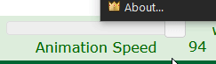
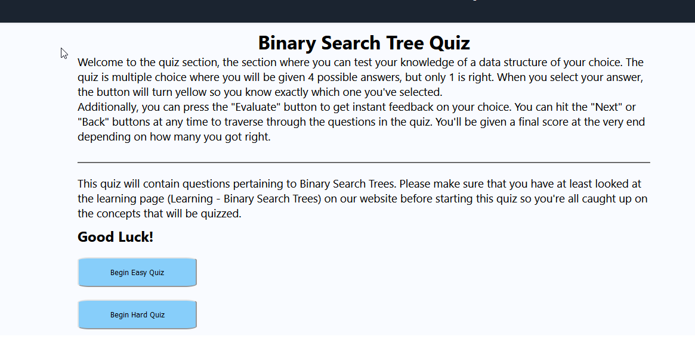

CS4474 - Group 9
Data Structure Visualizer
Executive Summary
As students embark on their computer science journey, they inevitably encounter tree structures. Tree algorithms, encompassing insertion, deletion, balancing, rebalancing, and searching, can be complex and many find them overwhelming. Many students benefit from hands-on learning experiences, and visualizers provide an effective way to understand these algorithms through animations. One popular visualizer is a website by David Galles at the University of San Francisco, which offers visualizations for numerous algorithms. However, this tool contains design flaws, has dated design, and is missing some key features, all of which hinder its effectiveness as a learning tool, forcing users to rely on supplemental applications for their learning. Our redesign aims to address those weaknesses and provide a more comprehensive learning experience.
We integrated the visualizer with lessons and quiz questions to create a multimedia interface, eliminating the need for supplemental applications. The design of the user interface (UI) has been reworked to be clearer and more intuitive. Elements are grouped together more cohesively, and some are hidden under drop-down menus for a cleaner interface. We improved navigation by adding menus for smoother transitions between different tools.
An important improvement happens in the input boxes themselves. They no longer have hidden affordances, and they can accept a wider range of characters, restricted to integer values only to avoid confusion. Furthermore, we have improved the visual design, updated it with React, and added a learning module to enhance the emotional and affective experience.
During the redesign process, we faced several design challenges, such as evaluating and iterating on the UI design, leading to the final version being selected after multiple models were examined. We also encountered issues with multi-value input working faster than the animation code, which required adjustments to the animation delay.
We have incorporated explanations, code, and pseudocode alongside the visualizer to facilitate a deeper understanding of the algorithms being studied. A quiz section allows users to reinforce their learning, while a dedicated section for reviewing specific algorithms offers detailed explanations and time complexity analyses.
These improvements significantly enhance the user experience by creating a more organized and visually appealing interface. Additionally, the added learning support features amplify the visualizer’s effectiveness, enabling users to achieve their learning goals more efficiently. Despite the challenges faced during the redesign, our redesigned website offers a more intuitive and comprehensive learning experience for users seeking to master tree algorithms.
Navigational Map
This is the lesson plan storyboard:
This is the quiz plan storyboard:
This is the visualizer storyboard:
Employed Design Principles
We have 24.00 design principles incorporated into our project:
1. Closure:
We applied the Gestalt law of closure by incorporating a progress bar on our learning pages. This progress bar provides users with an overview of their learning progress, helping them understand how far they have come and how much further they need to go. This improves the user experience by creating a sense of achievement and motivation as users work through the learning materials.
2. Common Fate
To enhance the user experience, we designed our practice curriculum to follow a left-to-right layout, maintaining consistency and cohesion. We begin with introductory lessons on the left, followed by practice sessions in the middle, and conclude with a multi-level quiz session on the right. This allows users to easily understand the sequence of steps they need to follow to complete the course.
3. Continuity
We ensured continuity in our design by guiding users through the content in a vertical format. A vertical slider helps users navigate the learning materials seamlessly, providing a clear and consistent learning path.
4. Proximity
We applied the Gestalt law of proximity by grouping similar components together in our menu. For example, insertion and deletion information are displayed alongside their respective diagram GIFs, making it easier for users to find and understand the information they need.

5. Similarity
To improve usability, we formatted our content in a familiar and consistent manner, allowing users to easily recognize and interact with clickable elements, such as quiz buttons.
6. Symmetry
In our quizzes, we maintained symmetry by displaying four possible quiz answers equally distributed on each side. This balanced layout enhances the user experience by creating a visually pleasing and organized interface.
7. Externalization of Information
We designed our system with specific visual appearances for each type of object, making it easy for users to understand their intended use. For example, multimedia content is designed to be read and viewed, while practice components feature clearly identifiable play and input fields.
8. Visibility
To avoid overwhelming users, we focused on providing only the necessary information and tools, ensuring a streamlined and straightforward experience.
9. Principle of Familiarity
We enabled users to input data according to their preferences by allowing manual entry, either one-by-one or in multi-set format.
10. Affordance Principle
We utilized affordances in our design, such as providing back and forward navigation options in the quiz section, helping users understand how to navigate through the content.
11. User Interface Affordance
We designed our interface so users can only interact with one option at a time in quizzes, practices, and lessons, ensuring a clear and focused experience.
12. Static vs Dynamic Affordance
Our project includes static affordances like buttons for interaction in quizzes and practice sections, making it easy for users to understand and interact with the interface.
13. Constraints
We implemented physical constraints by allowing users to control the animation speed, enhancing the user experience. We also introduced psychological constraints through menus, guiding users to interact with the interface in specific ways.
14. Chunking
We separated learning material into manageable chunks and grouped related content together, following the Law of Proximity, making it easier for users to understand and digest the information.
15. Mapping
We organized information on learning and quiz pages into distinct categories, allowing users to make clear choices about the topics they wish to learn, practice, or evaluate.
16. Confirmation
To prevent unintended actions, we provide visual feedback and prompts for users to confirm their input selections or to cancel their actions if necessary.
17. Progressive Disclosure
We designed our content to display only necessary and requested information at any given time, presenting one page at a time for lessons, practice, and quizzes, reducing cognitive load on users.
18. Consistency
Our application maintains consistency throughout its various sections, such as learning pages with uniform multimedia presentations, practice sections using the same user interface tool for visualization, and quizzes following a consistent format. This ensures a coherent and predictable user experience, making it easier for users to navigate and interact with the content.
19. Transfer
We designed our application to follow a traditional learning process, similar to how a textbook presents information. The app starts with an introduction, followed by practice simulations and evaluations at the end. This familiar layout helps users better understand and engage with the learning materials.
20. Garbage In - Garbage Out
To maintain input quality, we restricted user data entry to specific areas, such as learning and quiz pages. By limiting input options, we ensure that the quality of the system’s input remains high.
21. Control
We designed our application to give users control over quiz difficulty and the pace of data input. These features allow users to tailor the learning experience to their individual expertise and preferences.
22. Feedback
We incorporated feedback messages to inform users of their progress within the learning pages. Additionally, we provided feedback on specific data structure entries and operations, ensuring that users understand the results of their actions.
23. Causality
Our design establishes causality by providing clear outcomes and next steps following each operation. For instance, when a user finishes a quiz question, we suggest possible next actions. Similarly, after adding input to an animation, users can see the completed or final state.
24. Hick’s Law
To simplify decision-making for users, we limited the number of choices available for data structures, quiz options, and learning paths to four. This streamlined selection process allows users to make quick and efficient decisions.
Detailed Heuristic Evaluation
1. Visibility of System Status
1.1 Progress Tracking
We use visual displays to inform users of their current position within the system. For example, we include a progress bar on learning pages, practice sessions, and quizzes, giving users a clear sense of their progress and how much more they need to complete. Additionally, we provide visual cues such as color changes, animations, and tooltips to communicate the state of buttons and interactions.
1.2 Next Steps
Upon completion of a task or feature, we guide users on the next steps in the process. For instance, after finishing a quiz question, we suggest potential actions, such as reviewing previous questions, moving to the next question, or accessing additional learning resources.
1.3 Slow Response Time
An unfortunate side effect of adding the ability to add multiple nodes at the same time, we had to increase the response time significantly to ensure the animation works well (also related to point 2.3 in this list). This delayed response time between inputs and visual feedback could lead to user frustration and a diminished learning experience.
2. Match Between the System and the Real World
2.1 Familiar Terminology
Our system employs traditional terminology and concepts found in data structure learning websites, courses, and textbooks. We avoid using jargon or technical terms that may confuse or alienate users, instead opting for language that is clear, concise, and relatable to users with varying levels of expertise.
2.2 Real-World Mapping
We designed our system’s features to align with real-world processes and workflows. The learning materials, practice sessions, and quizzes are organized in a manner that mimics the progression of a traditional textbook or course, enabling users to feel more at ease while navigating the system.
2.3 Dated Language Framework
The current code is based on dated code libraries, however to improve this aspect would require rewriting the entire code, from scratch. This dated framework means the system is clumsy and appears dated. An overhaul of the entire system using a modern framework would have helped us in improving performance, optimizing the algorithms and visualizations to reduce response times, create a smoother user experience, and modernize the overall look and feel of the system.
3. User Control & Freedom
3.1 Navigation Flexibility
We allow users to move freely between distinct areas of the system, including learning materials, practice sessions, and quizzes. Backward and forward navigation options are provided, enabling users to revisit previous sections or change their responses at any time.
3.2 Undo Functionality
To further empower users, we include undo functionality that allows them to correct perceived mistakes or revert to a previous state. This enhances the user experience by fostering a sense of control and confidence while navigating the system.
3.4 Missing Features
3.4.1 Missing Direct Interaction Feature
There is no way to interact with the tree directly by pressing on various nodes (for example, right-clicking to have a drop-down menu which would allow to delete a node, or print the path to it, etc.). This feature cannot be added without first modfying the entire code to work with a modern library for the purpose of animation and otherwise. Despite it, having such a feature would have given users the opportunity of a more hands-on experience when learning about tree structures, and would have increased the emotional investment.
3.4.2 Missing Tree Merging Feature
The ability to merge two trees. This could be an essential function for users who want to explore advanced tree manipulation techniques. Incorporating this feature will provide a more comprehensive learning experience for advanced users.
3.4.3 Missing Advanced Tree Building Quiz
An advanced tree building quiz where the user gets a question such as “how would a tree look if we add 6, 8, 1, 3, 11, 5, in this order, to an empty tree?”. Such questions would help deepen users’ understanding of tree structures and their manipulation and provide a more challenging and engaging learning experience for users who have already mastered basic tree concepts.In the current framework, adding this feature would be somewhere between very difficult.
3.4.4 Missing Tree Saving Feature
Storing the existing tree to memory so the user will have the option of using it when opening the page the next time (likely through cookies). This would allow users to save their progress and continue working on their tree structures at a later time. Adding this feature could improve user satisfaction and provide a more personalized learning experience.
3.4.5 Missing Tree Comparison Feature
The ability to compare various algorithm and trees is missing. Comparing trees can help users understand the differences between various tree structures and their respective properties. Implementing this feature could facilitate deeper understanding and analysis of tree structures.
3.4.6 Missing Accessibility Support
At the current time, there is in adequate accessibility support, limiting the usability of our system for users with visual impairments or other accessibility needs. It is essential to incorporate accessibility features to create a more inclusive learning experience.
3.4.7 Implementing the Updates for the Remaining Tools
As there are over 4 dozen tools, we did not have the time or ability to modify them all, and had to concentrate on specific ones. Updating the remaining tools would improve consistency and overall quality.
4. Consistency and Standards
4.1 Internal Consistency
We maintain internal consistency within our learning application by adopting a uniform content layout across all pages. For example, learning pages follow the same structure for introduction, insertion, and deletion order, and each subsection includes a block of text accompanied by a GIF visual to explain and demonstrate the process.
4.2 External Consistency
Our application adheres to established design principles and conventions commonly found in other websites, applications, and resources related to data structures. This external consistency ensures that users find our system intuitive and easy to use, as it aligns with their existing mental models and expectations.
5. Error Prevention
5.1 Undo and Backward Functionality
In addition to the backward navigation mentioned earlier, we provide users with the ability to undo certain actions, such as changing quiz responses or modifying input in practice sections. This feature helps prevent errors by allowing users to correct their mistakes without penalty or frustration.
5.2 Clear and Confirmation Prompts
To further minimize the likelihood of errors, we incorporate clear prompts asking users to confirm or cancel certain actions, such as resetting their quiz responses. This added layer of verification ensures that users fully understand the consequences of their actions and have the opportunity to change their minds if necessary.
6. Recognition vs. Recall in User Interfaces
6.1 Familiar Interface Elements
Our system utilizes familiar interface elements, such as menus, buttons, and input fields, which allows users to quickly recognize and interact with these components. By adopting well-established conventions, we reduce the need for users to recall previous experiences and make the interface more intuitive.
6.2 Information Availability
We provide users with the appropriate amount of information needed to complete tasks and interact with the system effectively. For instance, buttons for playing visualizations, adjusting animation speed, and managing insertion/deletion/search fields are all clearly labeled and accompanied by tooltips or descriptive text. This approach ensures that users have the necessary context to make informed decisions while using the system.
7. Flexibility and Efficiency of Use
7.1 Unrestricted Access to Components
Our system allows users to access any component—learning sections, practice modules, or quizzes—at their own discretion. We do not impose a strict progression path, enabling users with varying levels of expertise to choose the content that is most relevant to their needs and interests.
7.2 Tailored Experience
We enable users to tailor their learning experience by offering customizable settings, such as animation speed and quiz difficulty. These options cater to different learning preferences, ensuring that users can interact with the system in a way that best suits their individual needs.
Quiz annotation!
8. Aesthetic and Minimalist Design
8.1 Clear Information Hierarchy
We display only the relevant information that users need to accomplish their tasks in each section. By adopting a clear information hierarchy and separating content into distinct sections—such as quizzes, practice, and learning materials—we create a clean and uncluttered interface that is easy to navigate and understand.
8.2 Visual Consistency
Our design employs consistent visual elements, such as color schemes, typography, and iconography, throughout the system. This unified aesthetic contributes to a professional and cohesive user experience, helping users to focus on the content rather than being distracted by inconsistent visuals.
9. Help Users Recognize, Diagnose, and Recover from Errors
9.1 Error Recovery Options
We provide users with the ability to recover from errors by offering options to reset inputs, answers, or other actions. By giving users the opportunity to correct their mistakes, we promote a positive user experience and ensure that users do not become frustrated or disheartened.
Reset annotation!
9.2 Informative Error Messages
When errors do occur, we display informative and actionable error messages that help users understand the cause of the issue and suggest possible solutions. This approach empowers users to address errors effectively and minimizes confusion or frustration.
Tutorial annotation!
10. Help & Documentation
10.1 Multimedia Tutorials
We offer multimedia tutorials that guide users on how to use the system, particularly in relation to practice sessions and quizzes. These tutorials feature concise and concrete step-by-step instructions, accompanied by visuals or animations to demonstrate each step.

10.2 Accessible Help Resources
Our help resources are easily accessible and well-organized, ensuring that users can quickly find the information they need to resolve any issues or questions they may have. By providing clear and comprehensive documentation, we empower users to make the most of our system and overcome any obstacles they encounter.
Tutorial annotation!
List of Recommendations for Improvement
Considering the entire report and specific final evaluation, the following recommendations can be made for improving the system:
- Considering the entire report and specific final evaluation, the following recommendations can be made for improving the system:
- Update the entire codebase: Modernize the system by rewriting the entire code using a modern framework like React or Angular. This would result in improved performance, reduced response times, smoother user experience, and a more contemporary look and feel.
- Add direct interaction features: Implement the ability to interact directly with the tree by selecting nodes, offering options like deleting nodes or displaying the path to the selected node. This would enhance the hands-on learning experience and increase emotional investment.
- Introduce tree merging feature: Enable users to merge two trees, allowing them to explore advanced tree manipulation techniques and catering to advanced users.
- Incorporate advanced tree-building quizzes: Develop quizzes that involve advanced tree-building tasks, deepening the understanding of tree structures and their manipulation and providing more challenging and engaging learning experiences.
- Implement a tree saving feature: Allow users to save their current tree structures so they can continue working on them later, providing a more personalized learning experience.
- Add a tree comparison feature: Include the ability to compare different algorithms and trees, which would facilitate deeper understanding and analysis of tree structures.
- Improve accessibility support: Enhance the system’s accessibility features to cater to users with visual impairments or other accessibility needs, creating a more inclusive learning experience.
- Complete the updates for the remaining tools: Ensure consistency and overall quality by updating all tools in the system.
- By addressing these recommendations, the system can be significantly improved and provide an even more comprehensive and intuitive learning experience for users looking to master tree algorithms.